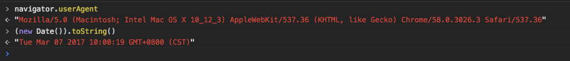

记 (new Date()).toString() 的一个坑

先从问题说起
最近接到客户反馈的一个 Bug，说一个页面显示不正常，控制台一开，果然JS报错，仔细一看，是项目里用到的 bootstrap-datetime 这么个老牌日期插件报的错。大概意思是说无法调用 undefined 的 slice 方法。点进去看了下，出错的地方是这么一行代码：
this.defaultTimeZone = (new Date).toString().split('(')[1].slice(0, -1);把代码拷贝到 Chrome 里执行下，一切正常。跟客户一番沟通之后，发现对方是在 Windows 下用 Firefox 访问才出现的问题，于是乎找来一台 PC 实验，果然报错。
根据报错的提示，应该是在split()的时候出了错，前面(new Date).toString()肯定是没有问题的。由于仅在特定浏览器下出现问题，于是考虑可能是浏览器兼容问题，先把(new Date).toString()打出来看看再说。
下图分别是 Mac 下的 Chrome58、Firefox 51，和 Windows 下的 Firefox 51、Firefox 52 对应的输出（附上 UA 以验明正身）：



问题很明显了，split()试图寻找左括号，以获取时区，但在 Windows 下的 Firefox 中没有显示时区，输出里没有左括号，导致split('(')的结果是一个长度为 1 的数组，访问下标 1 当然会是undefined。
原因找到了，解决起来就顺利多了，不过这里是第三方依赖的问题，不太好patch，只好直接对插件动刀，先判定有没有括号，没有时候给个默认值。
问题解决完，本想去 Github 上 Pull Request 的，但突然想到手头这个版本用了挺久了，自我接手之后就一直没更新过，会不会新版本里已经解决了，于是乎检查了下更新，果然不是最新版。冒险更新到最新版，果然问题已经解决了，而且解决方法简单粗暴：人家直接拿掉了this.defaultTimeZone这个参数。好吧，看来没我事儿了。
小结
从软件工程的角度来讲，版本越新未必就越好，因为会引入不确定性，所以不提倡盲目追新。但新版本又在不断修订之前版本的缺陷，因此是否升级是个很纠结的问题。不过具体到前端领域，像 Node、Angular 等大型项目的发布周期都已经缩短到 6 个月，React 的更新更是小碎步，更别提 npm 上数不尽的项目，连 ECMAScript 本身以及 Babel 等转译工具也是遥遥领先于生产环境，版本更新已然成为了常态，作为开发者，勇于试错，大胆拥抱新事物，才能保持自己的核心竞争力。
PS
最后附上各大主流浏览器在两大主流操作系统下时区部分的输出结果，供感兴趣的朋友参考下。（数据有效性仅适用于发文当时的版本，后续版本可能会有变动，请以实际输出为准）
| macOS 10.12.3 | Windows 10 | |
|---|---|---|
| Chrome 58 | CST | 中国标准时间 |
| Firxfox 51 | CST | 无 |
| Safari 10 | CST | - |
| Edge 14 | - | 中国标准时间 |
| IE 11 | - | 中国标准之间 |